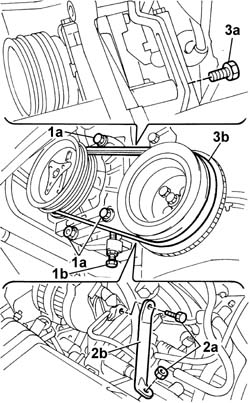
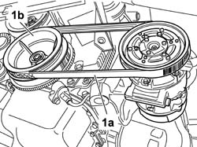
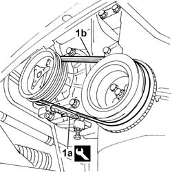
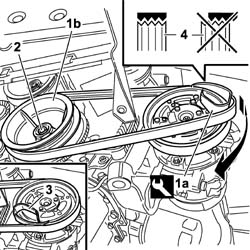

1092D10 air conditioner compressor drive belt - r + r
- Path
- Procedures > 10 ENGINE > 1092 ENGINE COMPONENT MISCELLANEOUS DRIVES > 1092D air conditioner compressor drive > 1092D10 air conditioner compressor drive belt - r + r
- Kind
- repair procedure (removal / refitting; the operation number is the code)
- Applies to
- all engines; all production periods
- Interactive page
- https://sloeber94.github.io/elrnDB-fDbl/en/#/2584331
Applies to: all engines; all production periods
 Removing
Removing
 Refitting
RefittingPosition the vehicle on a lift.
7055B54 under-engine guard - r r
1092B68 belt from a/c compressor to alternator drive r + r
1048A10 air cleaner filtering element - replace
Raise the vehicle.
1092C11 power steering pump drive belt - r r for versions with air conditioner
1. Loosen the bolts and the nut (1a) fixing the air conditioning compressor to the mounting and also loosen the micrometric screw (1b) for the belt tensioning device.
2. Undo the nut and the bolt (2a) fixing the alternator reinforcement bracket (2b).
3. Loosen the rear fixing bolt (3a), rotate the compressor and release the drive belt (3b) from the crankshaft pulley and from the compressor pulley.

Applies to: all engines; all production periods
Removing
RefittingDisporre il veicolo sul ponte sollevatore.
Sollevare il veicolo.
7055B64 Engine compartment DUST shield in front wheel arch (one), left or right - R.R.
1. Scalzare la cinghia elastica comando compressore (1a) ruotando la puleggia di comando degli organi ausiliari (1b) e facendo contemporaneamente leva sulla cinghia stessa prestando particolare attenzione a non danneggiare i componenti interessati dallo stacco.

Applies to: all engines; all production periods
Refitting
RemovingFit the new compressor drive belt on the respective pullies.
Rotate the compressor in an anti-clockwise direction and, using the micrometric screw, tension the belt, then lock it using the fixing nuts and bolts.
1. Using tool (1a) check the belt tension (1b) is within recommended values.
 | Name | Country |
|---|---|---|
1a | Torque wrench | 1.895.762.000 |
 | Measurement | Value | |
|---|---|---|---|
- | Tension (daN) | 48 - 60 | |
New belt (-) | - | ||
| Measurement | Value | |
|---|---|---|---|
- | Tension (-) | 30 - 41 | |
Used belt (-) | - | ||

Applies to: all engines; all production periods
Refitting
Removing1. Posizionare sulla puleggia del compressore l'attrezzo (1a) fornito con la nuova cinghia elastica, quindi calzare la cinghia sulla puleggia di comando organi ausiliari (1b) e sull'attrezzo.
2. Ruotare la puleggia di comando organi ausiliari di circa 180 agendo sul relativo dado di fissaggio e contemporaneamente calzare la cinghia sulla puleggia di comando compressore.
3. Una volta calzata la cinghia elastica estrarre l'attrezzo.
4. Verificare che la cinghia sia correttamente calzata su tutti i denti della puleggia.
La struttura elastica della cinghia di comando compressore garantirà il corretto tensionamento della cinghia stessa.

Applies to: all engines; all production periods
If the value measured is within the recommended limits, tighten the nut and the bolts fixing the compressor.
 | Fastening | Component | Ø | Value (daNm) |
|---|---|---|---|---|
- | Nut | AIR CONDITIONER ASSEMBLY COMPRESSOR | M10 x 1.25 | (Front fastening) 5 |
| Fastening | Component | Ø | Value (daNm) |
|---|---|---|---|---|
- | Bolt | AIR CONDITIONER ASSEMBLY COMPRESSOR | M10 x 1.25 | (Front fastening) 5 |
| Fastening | Component | Ø | Value (daNm) |
|---|---|---|---|---|
- | Bolt | AIR CONDITIONER ASSEMBLY COMPRESSOR | M8 x 1.25 | (Rear fastening) 2.2 |
Fit the alternator reinforcement bracket and tighten the fixing bolts and the nut.
| Fastening | Component | Ø | Value (daNm) |
|---|---|---|---|---|
- | Bolt | ALTERNATOR SUPPORT | M10 x 1.25 | 5 |
| Fastening | Component | Ø | Value (daNm) |
|---|---|---|---|---|
- | Nut | ALTERNATOR SUPPORT | M10 x 1.25 | 5 |
If the reading is not within recommended limits, repeat the tightening operation.
1092C11 power steering pump drive belt - r r for versions with air conditioner
7055B64 Engine compartment DUST shield in front wheel arch (one), left or right - R.R.
7055B54 under-engine guard - r r
Lower the vehicle.
1048A10 air cleaner filtering element - replace
1092B68 belt from a/c compressor to alternator drive r + r
Remove the car from the lift.
Applies to: all engines; all production periods
7055B64 Engine compartment DUST shield in front wheel arch (one), left or right - R.R.
Abbassare il veicolo su ponte sollevatore.
Rimuovere il veicolo dal ponte sollevatore.
Topics linked from this page (6)
- 1048A10 air cleaner filtering element - replace
- 1092B68 belt from a/c compressor to alternator drive r + r
- 1092C11 power steering pump drive belt - r r for versions with air conditioner
- 4450B04 right front wheel r r
- 7055B54 under-engine guard - r r
- 7055B64 Engine compartment DUST shield in front wheel arch (one), left or right - R.R.
Topics that link to this page (13)
- L10 CLIMATE CONTROL NOT COOLING
- 1016C11 single cylinder head-r r gasket for versions with air conditioner
- 1020D16 front crankshaft oil seal cover - r+r and replace gaskets for versions with airconditioner
- 1020D20 front crankshaft cover oil seal - replace for versions with air conditioner
- 1028H21 piston with connecting rod - r r
- 1032B14 TOOTHED TIMING BELT - R + R FOR TIMING ADJUSTMENT OR REPLACEMENT VERSIONS WITH AIR CONDITIONING
- 1032B47 toothed drive pulley - r r for versions with air conditioner
- 1032B53 driven toothed pulley (one) - r r for versions with air conditioner
- 1032C19 mobile timing belt tensioner - r r for versions with air conditioner
- 1088C12 water pump - r+r for versions with air conditioner
- 1092A12 crankshaft pulley - r+r for versions with air conditioner
- 5040A20 air conditioner compressor - r+r - includes fluid level check and top up if necessary
- 5040A26 compressor mount - r r